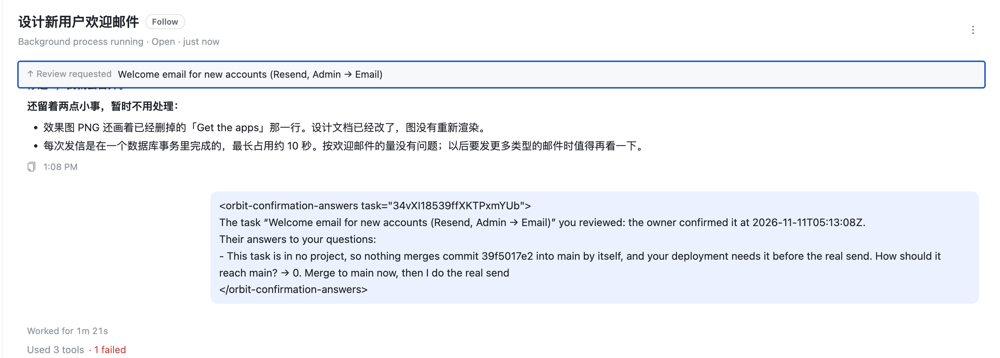

The turn owner-confirmation-answers:v1:<decisionId> in the reviewer's session. Today it has no card, so it's drawn as a message the reader typed. Proposal: it becomes the third card of a confirmation review, after Review requested and Sent back by the reviewer.

<orbit-confirmation-answers task="34vXI…">、裸 id、UTC 时间。0.。task="…" 裸 id。ProjectStartedCard 的 What the coordinator was told 同样画法。<orbit-confirmation-answers task="34vXI18539ffXKTPxmYUb"> The task “Welcome email for new accounts (Resend, Admin → Email)” you reviewed: the owner confirmed it at 2026-11-11T05:13:08Z. Their answers to your questions: - This task is in no project, so nothing merges commit 39f5017e2 into main by itself, and your deployment needs it before the real send. How should it reach main? → 0. Merge to main now, then I do the real send </orbit-confirmation-answers>
| 情况 | 画法 |
|---|---|
轮次带 confirmationAnswers 卡片 | 绿卡 You confirmed，不是用户气泡，不进「你自己的话」（不会被放回输入框） |
| 答案是选项 | 只写选项 label，不写序号 |
| 答案是原话 | 照原话，加弯引号 “…”，与回执 Your answers 一致 |
source = NOT_SHOWN | 答案下橙色小字 Not shown to you — the recommended answer was recorded.（复用 ANSWER_NOT_SHOWN） |
| 排队 / 未送达 | 虚线边 + 队列行；The session has not confirmed it received this.（同另两张卡） |
| 上线前已发出的旧轮次 | 保持现在的气泡：卡片在回显时写进 payload，旧轮次没有（不做回填） |
| 吸顶条 | 本卡成为锚：✓ You confirmed · 任务标题 |
| shared | ConfirmationAnswersCard 类型 {taskId, title, decidedAt, answers[{question, answer, notShown}]} |
| apiserver | turn-cards.ts 按 owner-confirmation-answers:v1: 读决定行出卡；orbit-message.ts platformCard；control-plane-note.ts + runner-api 写进 payload |
| web | lib/confirmationReviewTurns.ts parse；ConfirmationReviewTurnCards.tsx 新卡；Transcript.tsx 分支 + readersOwnWords；index.css .crc.is-confirmed |
| iOS / macOS | ConfirmationReviewTurns.swift、ConfirmationReviewTurnCardViews.swift |
| Android | TranscriptCards.kt、OwnerReviewViews.kt |
| 契约 | owner-confirmation-review-contract.md §8 补第三张卡 |